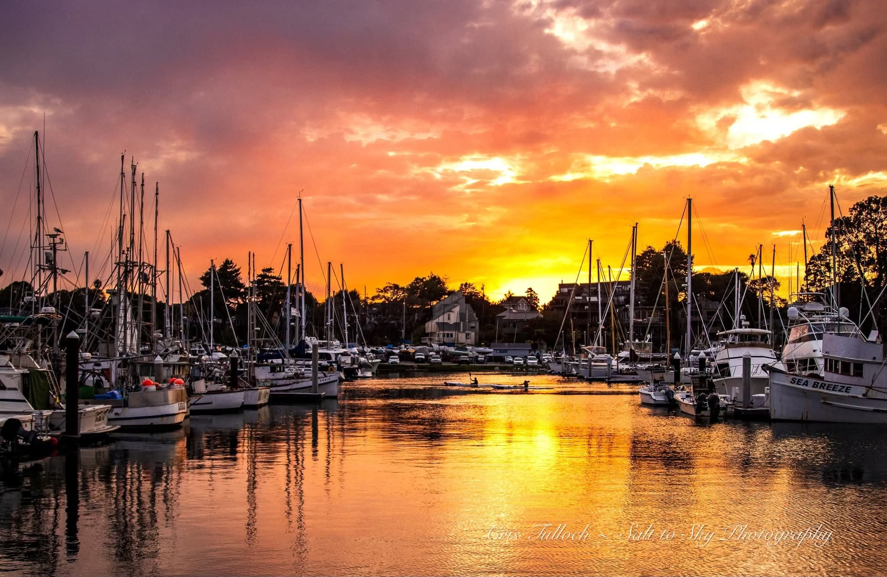
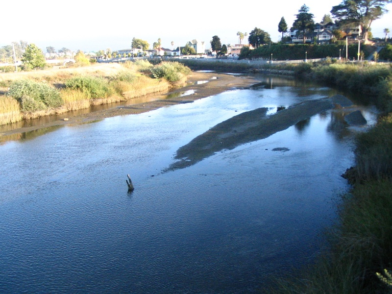
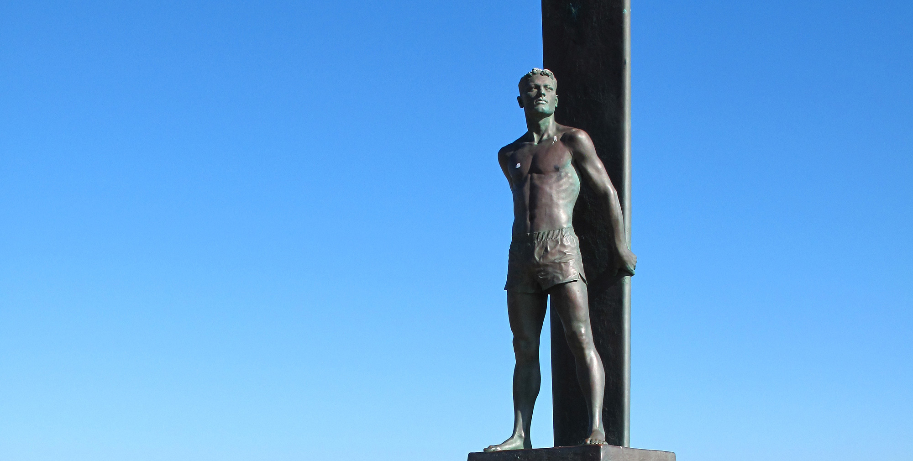

Human Stabilization Architecture
Our 5-Phase "Streets to Sheets" Continuum
Click or tap a phase card below to review our step-by-step continuum documentation.

Our Guiding Core Slogan
"Street-Level Compassion. Life-Changing Direction."
The California Clean Slate Program is a highly disciplined, multi-phase public-environmental tech and human stabilization framework designed to scale from Santa Cruz to a statewide and national footprint. Founded and led by Mandel Coulter, a certified Substance Use Disorder professional, our team pairs professional care with rigorous military operational discipline to transform community services into structural public infrastructure.
We are actively executing our "Bedrock to Buildout" phase right here in Santa Cruz County—assembling our resources, setting strict environmental compliance baselines, and refining our mobile fleet specifications before launching our initial operations.
We don't believe in temporary band-aids. Our framework is engineered on the absolute principle that premium mobile hygiene and continuous hot showers are the vital point of entry. This essential dignity loop breaks down barriers and establishes the unshakeable street-level trust required to systematically transition participants off the streets and onto a permanent path of self-sufficiency.
Strategic Scope Notice: Independent of the judicial system, this non-profit framework specializes completely in non-point source pollution mitigation, mobile wellness infrastructure, and stabilization services.
Click or tap a phase card below to review our step-by-step continuum documentation.

At the California Clean Slate Program, we evaluate community health through an integrated lens. Our upcoming field deployments are strategically optimized to target unhoused individuals along the critical San Lorenzo River corridors and adjacent urban waterways right here in Santa Cruz.
By deploying our custom heavy-duty mobile hygiene units directly to these sensitive sectors, we build immediate, trusted rapport to move participants seamlessly into our 5-phase "Streets to Sheets" continuum of care. This framework acts as a vital upstream intervention mechanism: by providing human-centric alternatives right at the source channels, we create a measurable drop in accumulated waste, plastics, and debris before they can ever flow downstream into the Santa Cruz Harbor and the protected Monterey Bay National Marine Sanctuary.
Correcting these structural challenges at the source ensures pristine downstream outcomes for our environment. Every milestone achieved by our participants simultaneously shields our local marine sanctuary, preserves vulnerable coastal habitats, and establishes Santa Cruz as the national blueprint for dual-impact municipal services.
True community stabilization requires unyielding operational discipline. Through our Frontline Fellowship program, we collaborate with our regional veteran community to manage heavy utility logistics, oversee technical greywater compliance, and execute precise street-level fleet deployments. Explore how we create meaningful local employment and structure our team for maximum community impact.
We treat community capital with absolute financial discipline. Every funding tier is structurally optimized to cover direct physical supplies alongside the fleet construction, utility engineering, and institutional infrastructure required to scale successfully from Santa Cruz across the nation.
Fully subsidizes comprehensive mobile hygiene, warm tankless showers, thermal socks, and full on-site sanitation loops for 6 individuals in crisis.
Secures 10 weather-resistant field kits packed with heavy-duty hygiene essentials and thermal apparel, completely scaling our active street outreach capabilities.
Sponsors a full morning of mobile fleet operations. Fully absorbs greywater compliance logistics, generator power systems, transit fuel, and asset maintenance buffers.
Deploys directly into custom industrial fabrication. Allocates dedicated structural capital toward heavy-duty chassis engineering, tankless heating loops, and utility vaults for our flawless $60k+ mobile fleet assets.
Sponsors major care-framework pipelines. Directs funding to cover structural outreach loops, continuous asset navigation, fuel corridors, and comprehensive regional service logistics to safely shift pathways forward.

We are currently executing the final buildout stages of a powerhouse organization designed to address street-level crises through meticulous systems engineering. We aren't just deploying a service; we are structuring a precision solution meticulously tailored to the geography of Santa Cruz.
When you back our capital campaign today, you are a foundational partner in this mission. Your contribution is the direct equity that fabricates our continuous-heat trailers and equips our field teams with the resources required to launch successfully. Your funding is the asset engine that will provide immediate baseline relief to our neighbors, ease structural strains on municipal budgets, and permanently bridge the gap between hyper-local temporary patches and a true clean slate.